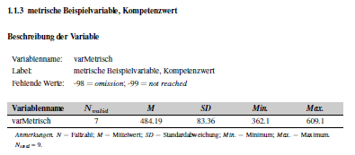
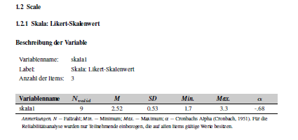
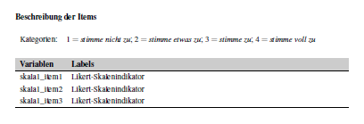
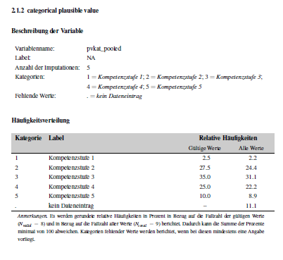
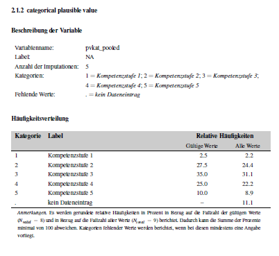

Full Workflow Bildungstrend
Edna Grewers
2025-12-21
Source:vignettes/full_workflow_BT.Rmd
full_workflow_BT.RmdIntro
Goal of the Vignette
This vignettes describes the full workflow of creating a codebook (or
Skalenhandbuch) via the eatCodebook package. For
illustrative purposes, we use a small example data set which comes
alongside the package and contains different types of variables (e.g.,
numeric, categorical, pooled variables, scales). We import the data set
using the eatGADS package, which is automatically installed
when eatCodebook is installed.
library(eatCodebook)
file <- system.file("extdata", "example2_clean.sav", package = "eatCodebook")
dat <- eatGADS::import_spss(file)The main function for creating a Skalenhandbuch or codebook is called
codebook(). It takes the input from several lists and data
frames that you create throughout this vignette and converts them into
one long object containing LaTeX code. You have to be mindful of special
characters (like α and other Greek letters) in string input from the
data frames as they might throw errors down the line. Also, formatting
in Excel is lost in the LaTeX script, so you may need to add LaTeX code
to the Excel files. The most common occurrences are mentioned in this
vignette.
While working on the codebook, you will probably find some mismatches or errors in the data. You then have to recreate every data frame or Excel table you created so far, including the changes you made to those objects. This vignette includes examples on how to write a script in R that you can just rerun in those cases, without having to redo a lot of work manually.
What is a Codebook?
In order to answer research questions, research institutes collect a
lot of data. Usually the data isn’t used to answer all possible
questions, but just the ones of interest to the study they were
collected for. When people want to to do their own research, they can
ask the institutes for the data.
A codebook contains documentation on all of the collected
variables of a study, ideally including their exact wording,
relevant descriptive statistics, references, and more. Codebooks enable
researchers to work with data sets they are not yet familiar with.
Furthermore, they should enable them to assess, whether data sets might
help them answer their research questions, before asking for the
data.
About this Vignette
There are several chapters explaining how to create a codebook. Next
to the data you need additional information like the references or
instructions of the variables, the order they’re supposed to be
displayed in and more. Each chapter contains an About
section explaining the what and why of what you are doing and a
To-do section explaining how to do these things in
R step by step.
The package eatCodebook was created with the codebooks
for the IQB Bildungstrend
studies in mind. Some use cases are specific to these Bildungstrend
(BT) studies, but you can create a codebook for your own study with
eatCodebook, as well.
The example code in this vignette will focus on the creating of a BT codebook, using the templates from a IQB methods team repository on GitHub.
Setup
Before we start, we need to setup a proper work space. Creating a codebook takes a while and involves several files, so without proper tracking of the process it is easy to lose focus. When editing the files in R, the script can get very long, so I recommend to use several .R documents to maintain overview.
Create a New Repository
First set up a new private repository in the iqb-research
project and use the template SHB_Erstellung_Vorlage.
when you don’t have access to this repository, ask the package developer
for help or create your own repository.


You now have all the .R templates that you need, but you might have to create the issues yourself. The To-dos should be apparent from this vignette or you can copy the issues from the template repo by hand. You will find the following files:
File Structure
There are several files and folders. The .R files contain example scripts and to-dos, that you need to adjust and add to.
| R File | Description |
|---|---|
0_main.R |
The main file you work in. You can work with just this file and ignore the others, if you want. I recommend using this file for smaller changes and the separate files for more complex changes. With this file, you can create Excel files which you then have to edit manually or in R. |
1_kennwerte.R |
Create and edit the inputForDescriptives files. This
might not be needed, when you don’t have to adjust anything here. |
2_varinfo.R |
Create and edit the varinfo file. This file contains
the core content of the codebook.
eatCodebook() creates the table structure with variable
names and labels on its own, but you have to add structure, references,
instructions, etc.. |
3_gliederung.R |
The information read from varinfo is usually
incomplete, so you have to add missing section names. |
4_literatur.R |
Create and edit the reference list. You have to match in-text citations to their respective references. |
5_latex_intro.R |
A template to create a .tex file with LaTeX syntax out of a Word .docx document. You need this later when creating the intro. |
6_Erstellung_kurz.R |
A short script which can create a new codebook version after you created all the necessary Excel files. |
You need to make sure that there are three folders and create them if not.
| Folder | Description |
|---|---|
excel_files |
Here you save all of the created Excel files to save the progress.
In this vignette you also save two .RDS files in this
folder. |
Latex |
Here you save the .tex files and pdfs of the finished LaTeX script
for the codebook. You can add the folder archive to keep
different versions to compare. |
Texte |
Here you can save the intro text, cover and other texts. |
Pull the repo and start with the file 0_main.R. You usually don’t need to copy any code from this vignette, because the template already contains example code lines that you can copy or adjust.
Packages
You need to make sure you have the latest package versions installed.
The packages you need are usually at the top of the files in
setup. To save time you can install them before you start
your work.
# main
remotes::install_github("beckerbenj/eatCodebook")
library(eatCodebook)
remotes::install_github("beckerbenj/eatGADS")
library(eatGADS)
# varinfo
remotes::install_github("weirichs/eatTools")
library(eatTools)
# references
install.packages("tidyxl")
library(tidyxl)
# latex_intro
install.packages("readtext")
library(readtext)After you set up your work space, you can now start creating the codebook step by step.
1. Import Data
The first step is the data import.
About the Data
The BT studies usually have several SPSS data files
(.sav) that you can import with import_spss(),
but you can also import .RDS files with
readRDS(). If you work with Github, the data sets are
probably too large to upload to Github, so they would need to be stored
locally. The BT codebook works with multiple data sets that are stored
in a list. But the process should also work if you have only one data
set.
The same variable name cannot be used more than once across the data sets!
The data sets can be stored in GADSdat objects,
containing two data frames: one for the variables and the actual data,
the other contains the meta data or labels for the variables.
Order of the Data Sets
You have to save all the data sets in one list that also determines the order in which the variables are displayed in the codebook. It’s best to choose the order you want right away, so you don’t have to make changes later.
In the past the BT data sets were ordered like this:
- data_sus: student questionnaire
- data_lfb_allg: general teacher questionnaire
- data_lfb_spez: learngroup specific teacher questionnaire
- data_slfb: school administration questionnaire
- data_match: data to match different data sets
It’s best to ask the BT team about the final order.
There might also be a data set called linking errors (Linkingfehler), but that’s usually not displayed in the final codebook. If not told otherwise, you can ignore this for creating the codebook.
Data Import To-do
Open the file 0_main.R. You need to make sure the
packages eatCodebook and eatGADS are
loaded.
Import the Data
Either use import_spss() for .sav (SPSS) files or
readRDS() to import each data set separately, you just need
a string with your local file path. Name them in a meaningful manner.
Here you have an example syntax, where you would need to adjust the
file name.
data_sus <- eatGADS::import_spss("Q:\\filepath\\Daten_sus.sav")
data_lfb_allg <- eatGADS::import_spss("Q:\\filepath\\Daten_lfb_allg.sav")
data_lfb_spez <- eatGADS::import_spss("Q:\\filepath\\Daten_lfb_spez.sav")
data_slfb <- eatGADS::import_spss("Q:\\filepath\\Daten_slfb.sav")
data_match <- eatGADS::import_spss("Q:\\filepath\\Daten_match.sav")Save Data in a List
After importing the data, you need to save it in one list
datalist. The order determines the order in which they are
displayed in the codebook. The names should be consistent
throughout.
datalist <- list(sus = data_sus,
lfb_allg = data_lfb_allg, lfb_spez = data_lfb_spez,
slfb = data_slfb, match = data_match)2. Descriptive Statistics
Now you have the raw data, but you want the descriptive statistics for the codebook, not just the data sets.
About Descriptive Statistics
One of the key elements of a codebook are descriptive statistics
shortly describing each variable in the data set. What kind of
descriptive statistics is reported for each variable depends on the type
of the variable. The function createInputForDescriptives()
creates a template to provide the information that is needed to
calculate the descriptive statistics for an GADSdat object.
The function has some arguments you can use to get a better result and
less manual editing in the next step.
Input for Descriptives Table
Here you can see an example how the object should look like and what the different columns mean.
inputForDescriptives <- createInputForDescriptives(GADSdat = dat)
#> Warning in FUN(data[x, , drop = FALSE], ...): Identification of fake scales
#> cannot be done completely automatically. Please check if the assignment of
#> which items belong to a common scale is correct.
head(inputForDescriptives)
#> varName varLabel format imp
#> FALSE.1 ID <NA> A2 FALSE
#> FALSE.2 IDSCH <NA> F8.0 FALSE
#> FALSE.3 varMetrisch metrische Beispielvariable, Kompetenzwert F8.2 FALSE
#> FALSE.4 varOrdinal ordinale Beispielvariable, Kompetenzstufe F8.0 FALSE
#> FALSE.5 varCat nominale Beispielvariable A1 FALSE
#> FALSE.6 skala1_item1 Likert-Skalenindikator F8.0 FALSE
#> type scale group
#> FALSE.1 variable <NA> ID
#> FALSE.2 variable <NA> IDSCH
#> FALSE.3 variable numeric varMetrisch
#> FALSE.4 variable ordinal varOrdinal
#> FALSE.5 variable <NA> varCat
#> FALSE.6 item ordinal skala1You can look at the template data frame either in R or save it in a new Excel file.
# look at it in R
View(inputForDescriptives)
# export in Excel
writeExcel(inputForDescriptives, "file_path/inputForDescriptives.xlsx")Some information may need to be modified because the function does not label it correctly. For this, it is necessary to understand the functionality and check the variable entries. We will come back to how to actually edit the table in R.
Here is a brief overview of the different columns in the
inputForDescriptivesobject:
- varName: The name of the variable of the GADS-object
- varLabel: The label of the variable of the GADS-object
- format: The format of the variable of the GADS-object, e.g. how to display the variable in the codebook
- imp: Indicator if imputed variables are involved
- type: Indicator of whether it is a single variable, a scale or a scale’s item
- scale: Indicator of how the variable is to be represented, e.g. what kind of statistics are shown
- group: Possibility to group variables, e.g. to group scales and their items.
In the varName, varLabel and format columns are information about the variables of the data set. You don’t have to edit anything.
imp can be set to WAHR or FALSCH. For imputed variables it needs to be set to WAHR. If there are several variables to be displayed on one page they must also be assigned to the same group at group.
type can be set to variable,
scale, item or fake_item. If you have a scale
with several individual items, the scale variable is set to
scale and the individual items to item. If you have
several items belonging to one scale, but no scale variable, set the
type to fake_item. All other variables should always get
variable as an entry.
Imputed variables (imp = WAHR) should always get the type
variable for now.
The scale column specifies how the variable is to be displayed. If it is empty, no descriptives are displayed. nominal variables display the frequency distribution of the labeled categories. ordinal variables display the frequency distribution of the labeled categories and the statistical parameters (like M or SD). numeric variables only display the statistical parameters, without labeled categories.
Now you can look at different possibilities how to represent variables in the codebook and how the table must be edited for this.
Variables without Descriptives
This can be the case, for example, with ID variables or character
variables. The page would be displayed like this:
The entry in Excel or the data frame must look like this:
Categorial Variables
Variables with nominal scales should display only
the frequency distribution of the labeled categories. The page would be
displayed like this:
The example data set doesn’t have any nominal variables at the moment. If your data set has nominal variables, you can create that page with the following input:

Categorial Variables and Statistical Parameters
Variables with ordinal scales should display the frequency distribution of the labeled categories as well as the statistical parameters N (number of participants), M (mean) and SD (standard deviation). The page would be displayed like this:

The entry in Excel or the data frame must look like this:
Numeric Variables without Labeled Values
Variables with numeric scales should display only statistical parameters: N (number of participants), M (mean), SD (standard deviation), Min. (lowest value) and Max. (highest value). This can be used for variables that represent age or variables with values in the decimal range. Nevertheless, these variables can contain labels for values. If they are defined as missing, these values are not taken into account in the calculation but are still reported. The page would be displayed like this:

The entry in Excel or the data frame must look like this:
Scale Variables with Individual Items
It is possible to get the following entries in the codebook for a scale and the items it is made of:

To get these pages the individual items must be labeled as
ordinal and item, and the scale as
numeric and scale. They must all have
the same name at group so that they are displayed
together.
This only works, when they are grouped and labeled correctly. Later
the function createScaleInfo() creates a data frame with
all scales and their items that were grouped like this.
Fake Scales
Sometimes several items make up a scale, but the data set doesn’t have a matching scale variable. The codebook would display it like a normal scale (see Scale Variables with Individual Items) with the same descriptive statistics.
To display fake scales like a real one, you need to group them like a real scale, but in the type column you need to write fake_item, so it looks like this:

The function createScaleInfo() should add these fake
scales to the data frame as well. But without the scale variable the
information which variables belong to that scale might be lost. The
individual variables might need to be added manually. See Scales for more information.
Imputation Variables
The BT sometimes uses imputations, for instance, in the student data
set (sus). It’s a way to deal with missing data on variables by
replacing missing values with substituted values, usually several times.
You can recognize the variables by the addition (imputiert)
in their label or _pooled in their group. These imputations
represent one (averaged) variable, so they should be displayed as one.
Depending on what was specified in scale, it results in
the following pages in the codebook. pv_pooled has
numeric input, pvkat_pooled has ordinal
input.
 

To display it like this the imp column becomes
relevant. It must be set to WAHR for these variables.
In addition, the variables also need a common name in
group and, depending on whether they are to be
represented categorically or numerically, the corresponding designation
in scale, the scale should match the original
variable.
The function createScaleInfo() adds an extra column for
imputed variables similar to a scale and their items to the data frame.
More on that later.
Descriptives Statistics To-do
The editing of the descriptives can be a lot of code, especially if
you have several data sets, so it’s best to do this in a separate file.
Make sure the packages eatCodebook and eatGADS
are loaded.
After you imported the data sets, you open
1_kennwerte.R. Then you copy the
Import Data Code in this file, so you can work on it
without needing to open 0_main.R the next time you work
on it.
For each imported data set, you create a new object with
createInputForDescriptives() containing input for the
descriptive statistics about each variable like their name,
label, format, scale level or which variables
are grouped together. You edit them according to the About section, check the input
and then you calculate the actual descriptive statistics with
calculateDescriptives().
Create Input for Descriptives
You use the function createInputForDescriptives() to
create a data frame for each data set separately and name them according
to your data sets like descriptives_sus or
descriptives_lfb_allg, etc. The function needs the
GADSdat data set (e.g. data_sus) and returns a
data frame.
# example dat from eatCodebook
inputForDescriptives <- createInputForDescriptives(GADSdat = dat, nCatsForOrdinal = 4)
# BT example code
descriptives_sus <- createInputForDescriptives(GADSdat = data_sus, nCatsForOrdinal = 4)
descriptives_lfb_allg <- createInputForDescriptives(GADSdat = data_lfb_allg, nCatsForOrdinal = 4)You should save each data frame separately to Excel. When you work
with the template you don’t need to adjust the file path - the Excel
should be saved in the folder excel_files. You just need to
make sure, that you are in the right working directory. Otherwise you
would have to adjust the file path. Remember adjusting the file names
when you copy and paste the code for the other data sets.
writeExcel(descriptives_sus, ".\\excel_files\\descriptives_sus.xlsx")
writeExcel(descriptives_lfb_allg, ".\\excel_files\\descriptives_lfb_allg.xlsx")Now you should have as many Excel files as you imported data sets.
Check and Edit inputForDescriptives
After saving them as Excel files you need to import them again with
getInputForDescriptives(). All getX()
functions check for proper format and run important cleaning
functions.
descriptives_sus <- getInputForDescriptives(".\\excel_files\\descriptives_sus.xlsx")Then you can look at the descriptives either by opening Excel
manually or by opening them in RStudio with View().
It should look somethings like this:
.png)
Now you have to check, whether everything is the way you need it to
be. If not, you have to either make changes in the Excel file manually
or directly in R. If you write a script that changes the data frame in
R, you can easily rerun it if you need to recreate the descriptives
later (which is often the case). After that you should save your changes
under descriptives_sus_edited.xlsx, so you don’t need to
recreate the original Excel later if needed.
Edit inputForDescriptives in R
Here are some examples on how to edit the data frames using R. You
might not have to edit anything or add some more lines of code,
depending on the data that you’re given. The examples to edit the
data frames use the example dat from
eatCodebook.
Sometimes createInputForDescriptives creates different
scale levels or type labels than we need. You can adjust each line
individually with descriptives$scale or
descriptives$type and the row number [n]. Or
you change multiple lines at the same time. Just like you would any
other data frame in R.
The column scale is later important for how the
variable is displayed in the finished codebook. Sometimes the function
sets the scale of variables to nominal, but they should
have ordinal, as they are a scale item. You can adjust that
by extracting all relevant variables, for instance by name, using
grep(), to identify the position of all variables that
start with a certain name in descriptives_sus. Sometimes
you need to recreate the descriptives objects/files and the position
might change, but the variable name should stay the same. In this case
you wouldn’t have to adjust your code and can just rerun it. With the
position of the variables, you can change multiple variables at the same
time. You can also change other columns this way.
# extracting the position of variables skala1_item1 - skala1_item3
pos <- grep("skala1_", inputForDescriptives$varName)
# adjusting the input for the column `scale`
inputForDescriptives$scale[pos] <- "ordinal"You can also adjust their group this way.
# adjusting the input for the column `group`
inputForDescriptives$group[pos] <- "skala1"Scales and their items should be labeled correctly in the column
type. The scale needs the label scale, the
items the label item; variables from a fake scale have no
sparate scale variable and all need the label
fake_item.
You can identify scale variables with the first line of code and save
it in the object group. The scale’s varName is
usually also the group label. The loop identifies all
variables with matching group labels that have the wrong
type label.
# identifying all scale variables
group <- inputForDescriptives[inputForDescriptives$type == "scale",]$group
# adjusting the item variables
for(var in group){
inputForDescriptives[inputForDescriptives$group == var & inputForDescriptives$type == "variable",]$type <- "item"
}Save your changes
When you made sure the variables are correctly labeled and grouped,
you save the new data frame in Excel. You can either overwrite the
existing Excel file, but I recommend saving it in a new
_edited.xlsx file for better comparison. You use the same
lines as before, just adjust the file name. Then import the new Excel
again to make sure the format is still right and load it into a new
object with the ending _edited.
# save changes
writeExcel(descriptives_sus, ".\\excel_files\\descriptives_sus_edited.xlsx")
# import changes
descriptives_sus_edited <- getInputForDescriptives(".\\excel_files\\descriptives_sus_edited.xlsx")Check Scale Consistency
You need to use checkScaleConsistency() for all
descriptives_x_edited objects that have scales separately.
The function checks whether the grouping of variables that belong to the
same scale matches in both the data set itself and the created
descriptives file. Be mindful of warnings or errors, they might indicate
something that will cause problems later.
check_scale <- checkScaleConsistency(data_sus, descriptives_sus_edited.xlsx, 1:nrow(descriptives_sus_edited.xlsx))Calculate Descriptives
After preparing and checking the input for descriptives you
now actually calculate the descriptives
(kennwerte) with calculateDescriptives() for
each data set separately. Depending on how large the data set is, this
can take a while.
kennwerte_sus <- calculateDescriptives(GADSdat = data_sus, inputForDescriptives = descriptives_sus_edited, showCallOnly = FALSE)
kennwerte_lfb_allg <- calculateDescriptives(GADSdat = data_lfb_allg, inputForDescriptives = descriptives_lfb_allg_edited, showCallOnly = FALSE)Save Objects in Two Lists
After creating the inputForDescriptives and the
calculating the descriptives (kennwerte), you save all of
them in two lists, one for the input,
one for the kennwerte. The order should match the order
of datalist, the list of the raw data sets, the names
should also match the datalist names.
# inputForDescriptives list
input_descriptives <- list(sus = descriptives_sus_edited,
lfb_allg = descriptives_lfb_allg_edited,
lfb_spez = descriptives_lfb_spez_edited,
slfb = descriptives_slfb_edited,
match = descriptives_match_edited)
# kennwerte list
kennwerte <- list(sus = kennwerte_sus, lfb_allg = kennwerte_lfb_allg, lfb_spez = kennwerte_lfb_spez, slfb = kennwerte_slfb, match = kennwerte_match)Then save them in two .RDS files with
saveRDS() in the folder excel_files. You can
import them again with readRDS().
# save files
saveRDS(input_descriptives, ".\\excel_files\\input_descriptives.RDS")
saveRDS(kennwerte, ".\\excel_files\\kennwerte.RDS")
# load files
input_descriptives <- readRDS(".\\excel_files\\input_descriptives.RDS")
kennwerte <- readRDS(".\\excel_files\\kennwerte.RDS")You should add the last two lines (load files) in your 0_main.R script behind the data import (see template).
3. Value and Missing Labels
Next you create the documentation of the value labels of valid and
missing values that is created with the function
createMissings().
About Missings
You create an Excel file that contains information on missing tags and labels used in the data sets.
Example Table
Here you can see what the missings data frame should
look like.
missings <- createMissings(dat, inputForDescriptives = inputForDescriptives)
head(missings)
#> Var.name Wert missing LabelSH Zeilenumbruch_vor_Wert
#> 3 varMetrisch -99 ja not reached nein
#> 4 varMetrisch -98 ja omission nein
#> 5 varOrdinal 1 nein sehr schlecht nein
#> 6 varOrdinal 2 nein schlecht nein
#> 7 varOrdinal 3 nein gut nein
#> 8 varOrdinal 4 nein sehr gut neinMissings To-do
Open 0_main.R again. The data sets
datalist need to be loaded in the work space, as well as
the two lists input_descriptives and
kennwerte.
You create a new data frame with createMissings() and
save it to Excel as missings.xlsx. You import it again with
getMisings() to check the format. Usually there’s no need
to edit anything.
# create missings
missings <- createMissings(datalist, input_descriptives)
# save to Excel
writeExcel(df_list = missings, row.names = FALSE, filePath = ".\\excel_files\\missings.xlsx")
# import Excel file and check for right format
missings <- getMissings(".\\excel_files\\missings.xlsx")4. Scales
In order to display scales correctly, you need an Excel file with an overview over all the scales and their items. Imputed variables that are to be displayed together are also listed in this file.
About Scales
Scale variables contain information about their scale, e.g. the items that make up the scale. Fake scales are made up of variables, but don’t have a separate scale variable; you can still display them as scales, see Fake Scales for more information.
Example Table
createScaleInfo() creates a list of data frames, each
data set has its own data frame (or sheet after saving to Excel). This
is what the scale info should look like:
scaleInfo <- createScaleInfo(inputForDescriptives)
head(scaleInfo)
#> varName Anzahl_valider_Werte
#> 1 skala1 -
#> 2 skala_fake_item -
#> 3 pv_pooled -
#> 4 pvkat_pooled -
#> Items_der_Skala
#> 1 skala1_item1,skala1_item2,skala1_item3
#> 2 skala_fake_item1,skala_fake_item2,skala_fake_item3
#> 3
#> 4
#> Imputationen
#> 1
#> 2
#> 3 pv_1,pv_2,pv_3,pv_4,pv_5
#> 4 pvkat_1,pvkat_2,pvkat_3,pvkat_4,pvkat_5In VarName you have the name of the scale variable or the group name (they should be the same). Items_der_Skala contains all items belonging to the scale or which have the same group name as a scale variable. Imputationen lists all imputed variables for each group name.
The function createScaleInfo() “finds” the scales by
looking for matching variable (varName) and group names. Fake scales
usually don’t have a variable where these two entries match, so they are
often not displayed in the data frame per default. You’d have to add
them in a script or manually.
Scales To-do
Open 0_main.R and scroll to or add
scales. You need to create one skalen.xlsx
Excel file, each data set has its own page. It contains the info which
variables are scales and which items belong to it, as well as which
imputed variables belong together. You just need the list
input_descriptives for that. Usually you don’t need to edit
this file, unless you work with fake scales.
Create Scales
The function createScaleInfo() reads the information
about scales out of the descriptives list, and creates a new list of
data frames.
skalen <- createScaleInfo(input_descriptives)Check Scales
You need to look at the object to make sure all scales are displayed correctly.
View(skalen)All errors and mismatches occurring here can or should usually be
fixed in the inputForDescriptives files.
Save Scales
Then save the data frame to Excel and import again with
getScaleInfo() to check for errors and format.
# save to Excel
writeExcel(df_list = skalen, row.names = FALSE, filePath = ".\\excel_files\\skalen.xlsx")
# import to check
skalen <- getScaleInfo(".\\excel_files\\skalen.xlsx")Add Fake Scales
In order to add missing fake scales to the data frame, you need to
identify the fake scales, add the group name in varName and
the fake items in Items_des_Skala. Be mindful of the data
set in which the fake scale occurs when you work with mulpitle data
sets, e.g. sus or lfb_allg. The last BTs never used
fake scales, in this case, you can ignore this.
You can identify fake scales in the descriptives files by their label
fake_item in the column type. You need you sort
them by group and add them to the skalen data frame.
fakeItems <- inputForDescriptives[inputForDescriptives$type == "fake_item",]
fakeItems[,c(1,7)] # look at the names and groupnewScales <- data.frame(varName = c("group1", "group2"), Anzahl_valider_Werte = "-", Items_der_Skala = c("fake_itemA1,fake_itemA2,fake_itemA3", "fake_itemB1,fake_itemB2,fake_itemB3"), Imputationen "")
# add to data frame
skalen <- rbind(skalen, newScales)5. Abbreviation List
You can add information about acronyms and statistical formula to the codebook’s appendix.
About the Abbreviation List
The codebook’s intro and additional texts might have abbreviations that need explaining. You need a list of two data frames (or Excel file with two sheets) with the abbreviations and their explanations: the first data frame is for Akronyme (acronyms), the second for statistische Formelzeichen (statistical formula).
You can usually copy the Excel abbr_list.xlsx or
abkürzungen.xlsx from last BTs and adjust them if needed or
you create you own file with createAbbrList().
You don’t need this object for the minimal version of the codebook, so you can skip this part or come back to it later.
Example Tables
createAbbrList() creates a list of two data frames
Akronyme (acronyms) and statistische
Formelzeichen (statistical formula) with two columns each. The
first should contain all abbreviations used in any text in the codebook
and their meaning. The second should contain all statistical formula
symbols and their meaning. It should look something like this:
View(abbr_list)
In Excel: First sheet Akronyme, second sheet
statistische Formelzeichen


Be mindful to use LaTeX syntax when you want to display special characters or italic letters, especially in the formula sheet!
Abbreviation List To-do
Open 0_main.R and scroll to or add
abbreviation list. You create either an empty object for
the abbreviation list with createAbbrList() or read in the
one from last year’s BT, call it abbr_list, and save it in
a new Excel file.
Create New Empty List
You create two empty data frames in a list with
createAbbrList(), already labeled correctly. You can edit
it in R or save it to Excel as abkürzung.xlsx in the folder
excel_files and edit it manually.
abbr_list <- createAbbrList()
# save in Excel
writeExcel(df_list = abbr_list, row.names = FALSE, filePath = ".\\excel_files\\abkürzung.xlsx")Import Old List
You can also import an old abkürzung.xlsx from the last
BT. Save it to your work space and update it if necessary. You would
need to update your file path for that.
abbr_list <- getExcel("Q:\\filepath\\abkuerzung.xlsx")
# save in Excel
writeExcel(df_list = abbr_list, row.names = FALSE, filePath = ".\\excel_files\\abkürzung.xlsx")Update the List
You can add or delete entries in R like with any other data frame
that is saved in a list. After making changes, you need to save them to
Excel with writeExcel().
# add a new line
abbr_list$`Statistische Formelzeichen`[nrow(abbr_list$`Statistische Formelzeichen`) + 1,] = c("α", "Cronbachs Alpha")
# add multiple lines
newLines <- data.frame(Abkuerzung = c("AG", "ALLG"), Bedeutung = c("Arbeitsgemeinschaft", "Allgemeine Schule"))
abbr_list$Akronyme <- rbind(abbr_list$Akronyme, newLines)
# remove lines
abbr_list$Akronyme <- abbr_list$Akronyme[-2,]Notes on Special Letters
LaTeX can’t display Greek characters when you just use the letter by
itself. You might need to adjust the spelling. $\alpha$ is
LaTeX code and should be printed like the image shows.
# edit one entry
abbr_list$`Statistische Formelzeichen`$Symbol[1] <- "$\alpha$"
Italic letters or subscript/superscript also need special LaTeX code.
The code $_{pw}$ makes the pw in subscript. Use
$^{2}$ for supercript the 2 or \textit{M} to
print italic text or letters.
# new line with correct syntax
abbr_list$`Statistische Formelzeichen`[nrow(abbr_list$`Statistische Formelzeichen`) + 1,] = c("r$_{pw}$", "Part-whole-korrigierte Korrelation")Either add new lines already with the LaTeX syntax or edit existing entries.
Use makeAbbrList()
When the Excel file from past BTs has commentary/extra columns in it,
you can’t use the function makeAbbrList(). Make sure you
only have two columns per sheet/data frame and delete any others, if
necessary.
# edit abbr_list
abbr_list$Akronyme <- abbr_list21$Akronyme[,1:2]
abbr_list$`Statistische Formelzeichen` <- abbr_list21$`Statistische Formelzeichen`[,1:2]
# save in Excel
writeExcel(df_list = abbr_list, row.names = FALSE, filePath = ".\\excel_files\\abkürzung.xlsx")When you have all the abbreviations, you can create the LaTeX code
that you need directly from the Excel file with
makeAbbrList() and save it in abbr_list:
# creates LaTeX syntax
abbr_list <- makeAbbrList(".\\excel_files\\abkürzung.xlsx")6. Variable Information (varinfo)
Creating and editing the varinfo object is the
main work of creating the codebook. This object
contains all information about the variables, their order and structure,
as well as their references, instructions, remarks or information about
the background model. There is only one object or Excel file, but each
data set has its own sheet or data frame, so you can edit them
separately.
About Varinfo
After preparing the inputForDescriptives you use the two
lists datalist (containing the data sets) and
input_descriptives to create a template list of data
frames, with one data frame per data set. Each data frame consists of a
column for the variables in the order of the
inputForDescriptives_edited file and several columns with
additional information about each variable.
In order for the variables to be displayed correctly in the codebook,
you need to add information on layout, structure, subsection names,
references, instructions, etc. for each variable. The order of the
variables in varinfo determines the order of the variables
in the codebook.
In the end, each data set will have it’s own chapter, each chapter
can have multiple sections with multiple subsections.
varinfo only contains information about the subsections.
Chapter and section information can be adjusted in a later step.
Example Table
Here is in example what that can look like.
varinfo <- createVarInfo(dat, inputForDescriptives = inputForDescriptives)
head(varinfo)
#> Var.Name in.DS.und.SH Unterteilung.im.Skalenhandbuch Layout
#> 1 ID ja NA -
#> 2 IDSCH ja NA -
#> 3 varMetrisch ja NA -
#> 4 varOrdinal ja NA -
#> 5 varCat ja NA -
#> 6 skala1_item1 ds NA -
#> LabelSH Anmerkung.Var Gliederung
#> 1 <NA> - -
#> 2 <NA> - -
#> 3 metrische Beispielvariable, Kompetenzwert - -
#> 4 ordinale Beispielvariable, Kompetenzstufe - -
#> 5 nominale Beispielvariable - -
#> 6 Likert-Skalenindikator - -
#> Reihenfolge Titel rekodiert QuelleSH
#> 1 NA <NA> nein -
#> 2 NA <NA> nein -
#> 3 NA metrische Beispielvariable, Kompetenzwert nein -
#> 4 NA ordinale Beispielvariable, Kompetenzstufe nein -
#> 5 NA nominale Beispielvariable nein -
#> 6 NA - nein -
#> Instruktionen Hintergrundmodell HGM.Reihenfolge HGM.Variable.erstellt.aus
#> 1 - nein - -
#> 2 - nein - -
#> 3 - nein - -
#> 4 - nein - -
#> 5 - nein - -
#> 6 - nein - -
#> intern.extern Seitenumbruch.im.Inhaltsverzeichnis
#> 1 - nein
#> 2 - nein
#> 3 - nein
#> 4 - nein
#> 5 - nein
#> 6 - neinNow we will look at the function of each column.
Here is a brief overview of the different columns in varinfo:
- Var.Name: The name of the variable
- in.DS.und.SH: Indicator whether the variable is in the codebook and data set
- Unterteilung.im.Skalenhandbuch: Overview of subsection names
- Layout: Assignment of the layout options
- LabelSH: The label of the variable (has to match the data set)
- Anmerkung.Var: Assignment of annotations in the codebook
- Gliederung: Overview of section numbering
- Reihenfolge: Order of variables in the codebook
- Titel: Title of the codebook page of the variable
- rekodiert: Display whether a variable was previously recoded
- QuelleSH: Specification of the sources of the variable in a questionnaire
- Instruktionen: Specification of the instructions of the variable in a questionnaire
- Hintergrundmodell: Indication of whether the variable is in the background model
- HGM.Reihenfolge: The order for the background model (in the appendix)
- HGM.Variable.erstellt.aus: Indication for the background model from which variables the variable was created
- intern.extern: Indication of whether the variable is for internal or external use
- Seitenumbruch.im.Inhaltsverzeichnis: Indication whether there is a pagination in the table of contents for the title
Var.Name
Each variable name has to be unique across data
sets. You can’t have a variable in data set 2 called IDBL
if there’s an IDBL in data set 1 already.
Across data sets, variables can’t have the same name!
in.DS.und.SH
DS means data set, SH
Skalenhandbuch (codebook). Possible entries are
DS, SH, ja and
nein.
The in.DS.und.SH column indicates whether a variable only appears in the data set but does not get its own page (ds), whether it appears both in the codebook and in the data set (ja), whether it only appears in the codebook (sh) or neither (nein).
When to assign what label:
- ds: for example, for the items of the scale variables, as they do not receive their own page
- sh: for pooled variables, as they are shown in the codebook but do not exist in the actual data set
- nein: for variables that are added independently; This can be the case, if you want to include them in the BGM information, but the variables do not exist in the data set
- ja: all other variables or scale items
When everything is labeled correctly in the
inputForDescriptives files, the right labels should be
assigned. But you might need to adjust them.
Unterteilung.im.Skalenhandbuch and Gliederung
The Unterteilung.im.Skalenhandbuch (subsection names in the codebook) column gives the name for the subsections.
In the Gliederung (subsection numbers) column, the
subsection numbers must be inserted. Subsections such as “1.1”, “1.2”,…
“2.1”. The names of the corresponding sections are edited in a later
step (s. 7. Structure). Make sure the
subsections names and numbers match. You need to add the
Gliederung as well as the
Unterteilung.im.Skalenhandbuch from another (Excel) file,
for the BT codebook it’s usually called something like
finale Reihenfolge.xlsx. See To-do on how to do that.
You can’t have duplicated subsection names. The sections Unterricht in Mathematik and Unterricht in Deutsch can’t both have a subsection called Selbstkonzept - it should say something like Selbstkonzept Mathematik and Selbstkonzept Deutsch.
Across data sets, subsections or sections can’t have the same name!
Layout
The input for the Layout column is automatically
created after using inferLayout().
LabelSH and Titel
The Titel column specifies the title for the page
and defaults to the variable label. LabelSH has to be
identical to the label in the data set, usually without special
characters or umlauts. The spelling of Titel can be
adjusted and umlauts are OK.
If you have access to an Excel file with all variables and their
labels and titles, you can copy that into varinfo without
having to check the spelling for each variable’s title. The BT Team
might add the titles to the Excel containing the final order (finale
Reihenfolge).
Anmerkung.Var
In this column, comments can be inserted (special text highlighting or breaks must be in the LaTeX syntax), which are displayed as annotations on the respective codebook page.
Reihenfolge
In the Reihenfolge (order) column, the order of the
variables for the codebook can be specified. However, the order of the
subsections already determines the order of the variables. If the column
is left empty (or with a 0), the order in
varinfo corresponds to the order in the codebook.
For the BT codebook, this column is usually left empty or set to
0.
rekodiert
If a variable has been recoded in the course of
previous editing, this can be marked with a ja in the
rekodiert column and the variable gets a corresponding note
in the codebook as inverted if it is an item of a scale.
You recognize these variables by the addition _r in
Var.Name.
QuelleSH and Instruktionen
In QuelleSH (references), the in-text citations can be added. Based on this, there is a later function that creates the reference list which contains all references and their matching in-text citation. All references or in-text citations should be in APA format.
In the Instruktionen (instructions) column, you can use text with LaTeX code for special characters to indicate which instruction was used to collect the variable in a questionnaire.
Each variable can have one or multiple references and/or
instructions, some have neither. The BT team usually has Excel files for
each data set on Q: that matches references to the
variables.
Background Model (HGM)
With eatCodebook you can also create a page in the
appendix for a background model (BGM) or Hintergrundmodell
(HGM) in German.
You need a BGM when you work with imputations as a statistical tool.
You don’t need to understand the details of a BGM when you create the
codebook. You just need to know that due to methodological reasons,
there are additional variables created that are not in the actual data
sets, that shouldn’t be displayed in the main codebook, but only in the
BGM appendix. For that, you need to add them to the respective
varinfo data frame. You can see how and where to add them
in the To-do part.
The appendix should look like this: Hintergrundvariable
contains the variable, Erstellt aus the variable(s) the
(new) variable was created from (if any), and
Inhalt der Hintergrundvariable contains the variable’s
label, e.g. the content of the background variable.

There are three columns in varinfo that you need to edit
for variables to show up in the appendix.
- Hintergrundmodell: Indication of whether the variable is in the background model.
- HGM.Reihenfolge: The order for the background model (in the appendix)
- HGM.Variable.erstellt.aus: Indication for the background model from which variables the variable was created
There should be another Excel file containing information on the
background model, also on Q:. It should contain the
variables that should show up in the appendix
(Variablenname), their labels (Variablenlabel)
and from which variables they were created from
(basevar).
For the variable to appear in the appendix, the column
Hintergrundmodell must be set to ja. Otherwise,
there must be a nein. Then you add the variables they were
created from (if any) listed in basevar. The order of the
variables should either match the one in the codebook or they should be
sorted in a way that makes sense. See last year’s BT codebook or ask the
responsible person from the BT team about the preferred order.
Varinfo To-do
Now comes the most time consuming part of actually creating and
editing the varinfo.
You have to create a list of data frames (one for each data set) and
save it to Excel. There’s a lot to add. While working on the
varinfo you often need to recreate it multiple times, so I
recommend writing a script in the additional file
2_varinfo.R to do the editing. Then you can just rerun
it without having to do too much. You should check after each
recreation, whether the script still worked correctly, though.
When working on the BT codebook for IQB, you can find most Excel
files containing the additional information to add on the network server
Q:.
When you open 2_varinfo.R you will have to import
the data and the descriptives in order to create varinfo.
After the setup you need to add the following information. The order in
which you add them is up to you, but it makes sense to keep to the order
in this vignette.
| Column in Varinfo | Where to get the Information from |
|---|---|
QuelleSH and Instruktionen
|
Both usually in the same file under
Q:/filepath/04_Instruktionen_Quellen, one Excel file per
data set |
Gliederung and
Unterteilung.im.Skalenhandbuch
|
Often in one file called something like
Reihenfolge_Variable_final.xlsx, contains one sheet per
data set |
rekodiert |
Info in the Var.Name: all with _r at the
end |
Hintergrundmodell, HGM.Reihenfolge and
HGM.Variable.erstellt.aus
|
In an extra Excel file, you might have to ask about it or also on
Q:
|
optional: Anmerkung.Var
|
In a file on Q:
|
The order of the variables when you first create varinfo
depends on the order from the data sets. However, the final order of the
variables might be different. It’s best to match the input to each
variable by name to make sure the matching is correct.
In the end, you need to make sure that the order of
varinfo matches the one in the
finale Reihenfolge (final order) Excel.
I recommend starting with the files that have the same order as the
original varinfo, so you only have to change the variable
order once. For this vignette I’ll just describe the procedure for one
data set, but you need to do it for each data set,
e.g. varinfo data frame or Excel sheet.
After you created and edited the varinfo.xlsx, you need
to add this line to your 0_main.R file.
varinfo <- getVarInfo(".\\excel_files\\varinfo_edited.xlsx")Varinfo Setup
Open 2_varinfo.R. Make sure that all packages
(eatCodebook, eatGADS, eatTools),
datalist (the data sets), as well as
input_descriptves and kennwerte are loaded.
You can copy the code from 0_main.R to the setup section of
this new file.
Create Varinfo
You first create a varinfo object with
createVarInfo() from the SPSS data list you read in at the
beginning (datalist) and from the input for descriptives
list you created out of that (input_descriptives):
varinfo <- createVarInfo(datalist, input_descriptives)If you have multiple data sets stored in datalist, the
object varinfo will also be a list with several data
frames. Each data frame contains all variables from a data set and
columns that you need, but you still need to add a lot of information
from other files. It’s important that the data sets and descriptives
were named the same (sus, lfb_allg, etc.),
because createVarInfo() takes those names to name the
different data frames. You can look at varinfo as a list or
at each data frame separately:
# View varinfo list object
View(varinfo)
# View data frames in varinfo
View(varinfo$sus)
View(varinfo$lfb_allg)
View(varinfo$lfb_spez)
View(varinfo$slfb)This is what the list of data frames varinfo can look
like:

You can either save it directly as an Excel file or do the layout first.
Infer Layout
You add layout information for each variable with
inferLayout(). You need the newly created
varinfo object, the datalist and
input_descriptives.
varinfo <- inferLayout(varinfo, datalist, input_descriptives)Save to Excel
Now save to Excel varinfo.xlsx as a template, and
varinfo_edited.xlsx as the file you actually work with in
the folder excel_files. Then you import and check the format of
varinfo_edited.xlsx by using getVarInfo().
# save to Excel
writeExcel(df_list = varinfo, row.names = FALSE, filePath = ".\\excel_files\\varinfo.xlsx")
writeExcel(df_list = varinfo, row.names = FALSE, filePath = ".\\excel_files\\varinfo_edited.xlsx")
# import and check format
varinfo <- getVarInfo(".\\excel_files\\varinfo_edited.xlsx")Add References and Instructions
To add the references and instructions you need access to the the
Excel files with all the variables listed plus their matching APA
in-text citations (like Hertel et al. (2014)) and their
instructions (in the questionnaire). The Excel should have two sheets,
one with at least 4 columns (Variable, Label, Instruktion and Quelle),
and a second one with the APA references and their in-text citations
that we need later. You need to do the following steps:
- import the in-text citations and instructions, select proper sheet (usually Sheet 1)
- check the columns with
View():Variable,QuelleandInstruktionen- match the in-text citations and instructions to the order of
varinfo- transfer the entries, check your progress/proper matching and save in between.
The matching data set is usually created due to technical reasons and usually doesn’t have references or instructions, so you don’t need to add anything to it
Import In-Text Citations and Instructions from Excel
Import the Excel file with getExcel(), you need to add
the proper file path. Then select the right sheet, usually
sheet 1, and look at the data frame.
quellen_sus <- getExcel("filepath\\Instruktionen_Quellen.xlsx")
quellen_sus <- quellen_sus$`Sheet 1`
View(quellen_sus)The data frame should look something like this.

Check Variables
First, we should check, whether the two data frames
varinfo$sus and quellen_sus contain the same
variables with setdiff(). When the output is
character(0) for both lines the names match. The first line
might return a variable name that’s in varinfo$sus, but not
in quellen_sus, the second line the other way around. In
either case you probably have to clean up the data frames first, before
doing the next steps.
Clean Up Data
Before you clean up any data, it’s best to ask your supervisor or the BT team on how to deal with these mismatches. In the following you will see a few possible reasons and how you can deal with them.
The first line of setdiff()
setdiff(varinfo$sus$Var.Name, quellen_sus$Variable)
returns variables in varinfo$sus that are not in
quellen_sus. These variables often were created due to
technical or methodological reasons and usually have no
references or instructions. You can ignore them at this point.
The second line of setdiff()
setdiff(quellen_sus$Variable, varinfo$sus$Var.Name)
returns variables in quellen_sus that are not in
varinfo$sus. That is the case when 1) variables changed
spelling for some reason or 2) the variables are not
supposed to be in this data frame, for instance, because they’re already
in another one (this might be the case for identifier
variables).
For 1) you adapt the spelling to match the spelling
in varinfo. If this is the case, the first line usually
also returns a variable with similar spelling. In the BT21 there is a
variable called Fach in the lfb_spez data set,
which was called LFACH in the quellen Excel.
You can just rename it by identifying where it is and adjusting the
spelling. This is a case where it might be easier to update the
references Excel file, but you could also do this in your script:
quellen_lfb_spez$Variable[quellen_lfb_spez$Variable == "LFACH"] <- "Fach"For 2) you might have to remove the rows of the
references data frame, so you can transfer them later more easily. For
that you can save the respective variables from setdiff()
in a character vector and run the loop below that identifies their entry
in quellen_sus and removes them. For the BT21 three
variables had to be removed, if there’s only one that needs to be
removed, you can skip the the loop. Again it might be easier to adjust
the Excel file on Q:, but only after you asked about
that.
# identify position of variable "IDBL"
mismatch <- c("IDSCH", "IDBL", "LVERSION")
for(var in mismatch){
# identify position of the variables in `mismatch`
pos <- grep(var, quellen_lfb_spez$Variable)
# remove line
quellen_lfb_spez <- quellen_lfb_spez[-pos,]
}After that you check again for mismatches between the data frames.
When there are none (character(0)), you can go to the next
step. Output from the first line can still be ignored.
Check Matching Variables
Not every variable will have a reference or instruction, some of them
have the input NA, so in theory you could copy paste the
columns to varinfo. However, the order of the variables
between varinfo and the reference/instruction sheet might
be different. To check the order you need the function
match() which compares two character vectors - for instance
quellen_sus$Variable and varinfo$sus$Var.Name
which both contain the variable’s names.
pos <- match(quellen_sus$Variable, varinfo$sus$Var.Name)
posIt returns a numerical vector that contains the strings (here the
names) of the second vector (varinfo$sus$Var.Name) in the
order in which they appear in the first vector
(quellen_sus$Variable). Strings in the second vector
(varinfo) that don’t appear in the first
(quellen_sus) just won’t show up, so any extra variables in
varinfo will be ignored by this function. If there’s a
string in the first vector (quellen_sus) that isn’t in the
second (varinfo), the output will be NA - that
shouldn’t be the case, if you cleaned up the data properly.
Transfer In-Text Citations and Instructions
After making sure you have the right variables in your
quellen object, you transfer the in-text citations and
instructions from into varinfo. In pos you
should now have the variable’s order (as a numeric vector) of the
variable names from varinfo$sus as they appear in
quellen_sus. So when you write these two lines to your
console, the in-text citations and instructions should be matched to the
proper variable in varinfo.
varinfo$sus$QuelleSH[pos] <- quellen_sus$Quelle
varinfo$sus$Instruktionen[pos] <- quellen_sus$InstruktionCheck New Input
It’s best to compare the two data frames once more to make sure the
in-text citations and instructions are matched correctly. You can check
all variables with View() or a random set of variables and
look at the respective columns.
Save Progress
When everything matched correctly, save your progress and import the
Excel with getVarInfo() to check for format errors.
writeExcel(df_list = varinfo, row.names = FALSE, filePath = ".\\07_SH_Erstellung\\varinfo_edited.xlsx")
varinfo <- getVarInfo(".\\07_SH_Erstellung\\varinfo_edited.xlsx")Add Structure and Subsections
For the BT, you can usually find the info on the Gliederung
(subsection numbers) and Unterteilung im Skalenhandbuch
(subsection names) in an Excel called something like
finale Reihenfolge on Q:. It contains the
variable names, their labels and subsection info (number and name), as
well as adjusted titles (if needed). Each of the data sets have their
own sheet, except matching data which still needs subsection info for
technical reasons (see here).
This Excel file also contains the final order in
which the variables should be displayed in the codebook, so you need to
adjust the order in varinfo to match the one in
finale Reihenfolge (final order). You need to do the
following steps that are explained in more detail below:
- Import the
finale Reihenfolgefile, select proper sheet for your data set- Delete unnecessary rows (sections labeled as
NA)- Compare variables (
varinfovs. final order)- Separate subsection names and numbers
- Check for duplicate subsection names
- Add missing subsections
- Change order of
varinfoto match the final order- Transfer subsection info in
varinfo- Update titles if necessary
Each subsection name has to be unique.
Import finale Reihenfolge
First you need to import the Excel file and select the proper sheet
for your data set (lfb_allg for example). The column
Abschnitt contains the subsection numbers and names, that
need to be separated later.
subsections <- getExcel("Q:\\BT2021\\BT\\90_Skalenhandbuch\\Reihenfolge_Variablen_final.xlsx")
subsections_lfb_allg <- subsections$LFB_allg
View(subsections_lfb_allg)It might look like this:

Abschnitt starts with the section name 1
Testdesign then with the first subsection name 1.1
Identifikationsvariable and then NA, then the next
subsections 1.2 Testgruppenmerkmale and 1.3 Rotation,
then the next section 2 Persönliche Angaben and so on. We need
to clean up the table so we can match the correct subsection info to
each variable in varinfo.
Remove NAs/sections in varName
We need the section names that start with a single digit like
1 later (see 7. Structure). The
finale Reihenfolge Excel added rows between sections, so
you have some NA entries in the column
varName, as well. To match the input for the subsections to
varinfo we need to delete those rows for now.
subsections_lfb_allg <- subsections_lfb_allg[!is.na(subsections_lfb_allg$varName),]Check Variables
Now we need to check if the variables in the final order file match
the ones in varinfo. It’s the same check like before,
except this time both variables should be exactly the same, so the
output should be character(0) both times. When you find any
mismatches report back to your supervisor.
Seperate Subsection Names and Numbers
We need the number of the subsection and their names separately, so
we can 1) check for duplicates and 2) transfer them in the respective
varinfo columns. The package eatTools has a
practical function for that: halveString() separates any
string at a specified separator into two strings. After each number
there’s a blank space, so that’s our separator. First we save our
Abschnitt column in a new vector, then we separate numbers
from names and save them in sep. It returns a data frame
with two columns, that we can name subsec number and subsec
name.
sep <- subsections_lfb_allg$Abschnitt
sep <- eatTools::halveString(sep, " ", colnames = c("subsec number", "subsec name"))Then we can add these two new columns to the existing data frame with
cbind() and check whether it worked with
View().
It should look something like this now:

Check for Duplicates
For some BTs the same data is collected for different subjects, so
they have the same subsection names (like Selbstkonzept
(self-concept)). Due to technical reasons each subsection name
has to be unique in the codebook. So it’s important to check
for duplicates and report back, if you find any. Be mindful of
NAs, as they are also seen as duplicated input.
Now that we have the subsection names by themselves, we can check for
duplicates in the column subsec name.
anyDuplicated() checks if there are any duplicates, at all.
If the output is 0, there are no duplicates and you can go
the next step. If the output is any other number, it indicates the
position of the first duplicated entry in the column.
duplicated() returns a logical vector of all entries,
TRUE indicates duplicated entries.
anyDuplicated(subsections_lfb_allg$`subsec name`[!is.na(subsections_lfb_allg$`subsec name`)])
duplicated(subsections_lfb_allg$`subsec name`[!is.na(subsections_lfb_allg$`subsec name`)])Add Missing Subsections
Now we need to fill the NAs with the proper subsection
info, which is always the one above. The NAs in row 3 need
to say 1.1 and Identifikationsvariable, in row 8 it
should say 2.1 and Soziodemografie, etc.
This loop checks every entry in the new columns
subsec number and subsec name for
NAs, if it finds one it fills it with the input from the
entry before it. After the loop you should check the columns with
View(): there shouldn’t be any NAs; the
numbers should match their names like in
finale Reihenfolge.
Change Varinfo Order
Now we need adjust the order of varinfo to match the
final order. This only works, if the variables of both data frames are
exactly the same like we checked before (see Check Variables).
We use the match() function again, but this time, we
save the changed order into the varinfo list. The first
object needs to be the variables in the order we want from
finale Reihenfolge, the second the object we want to
change. You can check again with View().
order_new <- match(subsections_lfb_allg$varName, varinfo$lfb_allg$Var.Name)
varinfo$lfb_allg <- varinfo$lfb_allg[order_new,]Add Subsection Names and Numbers in varinfo
Now that we cleaned up the table we got from
finale Reihenfolge, we have a data frame with the variable
names and their matching subsection numbers and names, as well as the
respective data frame from varinfo with a matched order, we
can finally transfer the subsection info into varinfo.
varinfo$lfb_allg$Unterteilung.im.Skalenhandbuch <- subsections_lfb_allg$`subsec name`
varinfo$lfb_allg$Gliederung <- subsections_lfb_allg$`subsec number`
View(varinfo$lfb_allg)To compare varinfo$lfb_allg and
subsections_lfb_allg you can use any kind of check
functions used so far, but it should be the same.
Matching Data
Matching data sets are created for technical reasons and don’t
contain a lot of variables. The BT rarely adds subsection info to the
Excel file, but due to technical reasons, they still need them. Because
they don’t have different subsections you can just edit the columns
Gliederung to 1.1 and
Unterteilung.im.Skalenhandbuch to
Matchingvariable, unless you are told to do otherwise.
varinfo$match$Unterteilung.im.Skalenhandbuch <- "Matchingvariablen"
varinfo$match$Gliederung <- "1.1"Adjust Titles
The variable’s labels cannot be changed, because they have to match the data sets. They usually don’t contain umlauts or other special characters. The titles have the same input as the labels per default.
Titel (titles) are shown in the table of content, it’s
nice to have proper (German) spelling here, so you can adjust it by
reading in the additional Titel column in the Excel file,
if you have that. This column contains spelling with umlauts, ß or other
special characters. After you changed the order of varinfo
to match the final order, you can just transfer the column in
varinfo$data$Titel like you did with the subsection
info.
varinfo$lfb_allg$Titel <- subsections_lfb_allg$`Titel.(Ebene.3)`Save Progress
When everything matched correctly, save your progress and import the
Excel with getVarInfo().
writeExcel(df_list = varinfo, row.names = FALSE, filePath = ".\\07_SH_Erstellung\\varinfo_edited.xlsx")
varinfo <- getVarInfo(".\\07_SH_Erstellung\\varinfo_edited.xlsx")Add Recoded Info
Each variable page shows the info whether or not a variable has been
recoded (ja) or not (nein). You recognize the
recoded variables by the ending _r in their name. This loop
looks through all data frames in varinfo in the column
Var.Name. If it finds the ending _r, it writes
ja in the column rekodiert for the respective
variable. That is all. This changes all data frames in
varinfo.
You can check if it worked with the following line (for each data frame separately):
varinfo$lfb_allg[,c(1,10)]Save Progress
When everything turned out correct, save your progress and import the
Excel with getVarInfo().
writeExcel(df_list = varinfo, row.names = FALSE, filePath = ".\\07_SH_Erstellung\\varinfo_edited.xlsx")
varinfo <- getVarInfo(".\\07_SH_Erstellung\\varinfo_edited.xlsx")Add Background Model Info
The background model (BGM) info is something to do for all data
frames at once, as well. This info will later show up in the appendix of
the codebook, not on the individual pages of the variables. You should
do this after changing varinfo to match the final order,
especially for the column Reihenfolge.HGM. The order of the
variables in the BGM appendix should either match the one in the
codebook or you group them by name. Ask your supervisor what they
prefer. You need to do the following steps:
- Import the Excel from
Q:- Add new variables to
varinfoif needed- Add background model info to
varinfo
Import Excel
For the BT studies, you will need access to an Excel file containing
all the relevant information about the background model somewhere on
Q:. Don’t forget to adjust the file path. There’s one sheet
with a lot of columns, but you only need 3 or 4 of them:
Variablenname, basevar , HGM and
maybe Variablenlabel. basevar contains the
info out of which variables a variable was constructed, but for most
variables this columns is empty. HGM has either the value
1 or 0.
First you import the file and save it into a data frame.
bgm <- getExcel("Q:\\BT2021\\BT\\51_Auswertung\\05_HGM\\05_VF_Imp2021\\variablen.xlsx")Then you select these three columns and delete the rest in your data
frame in R and look at it. You only need the ones that have the entry
1 in the column HGM.
Before you can work with this data frame, you need to replace the
NAs in the column basevar with
-.
bgm$basevar[is.na(bgm$basevar)] <- "-"Add New BGM Variables to varinfo
Before you add any BGM info to varinfo, you might have
to add a few variables to data frames that were created for the BGM.
These are not displayed in the codebook, but need to be listed in
varinfo, otherwise they won’t show up in the appendix.
For the BT21 there were variables created with the names
X.klasse for the student data, that were not in the data
set. You can identify these variables by using setdiff().
If you find any variables in the BGM Excel that you can’t find in any of
the data frames, you probably have to add them yourself.
You start by identifying the variables in the new hgm
table, in the example all variables that end with .klasse
are extracted.
# extracting .klasse variables, labels, and basevar
pos <- grep(".klasse", hgm$Variablenname)
hgm_klasse <- hgm[pos,]
View(hgm_klasse)Then you have to find out which data frame contains the originals.
You can use the basebar column for that. In this case there
are only individual variables listed, so that makes it easier to find.
You add a new column to the hgm_klasse data frame (called
dat). Then you search the variable names of all data frames
if they match an entry in basevar (the original variable)
and add the name of that data frame to the column dat.
hgm_klasse <- cbind(hgm_klasse, dat = NA)
for(var in hgm_klasse$basevar){
for(i in 1:length(varinfo)){
if(var %in% varinfo[[i]]$Var.Name){
hgm_klasse[hgm_klasse$basevar == var,]$dat <- names(varinfo)[i]
}
}
}In this case the original variables were all in the student data
(sus). So now you need to add new rows to the
varinfo$sus data frame. You need to add new empty rows to
varinfo. pos can give you the number of rows
you need to add.
Then you fill in the empty lines with default setting like so:
varinfo$sus[is.na(varinfo$sus$Var.Name),]$Var.Name <- hgm_klasse$Variablenname
varinfo$sus[varinfo$sus$Var.Name %in% hgm_klasse$Variablenname,c(2:17)] <- "-"
varinfo$sus[varinfo$sus$Var.Name %in% hgm_klasse$Variablenname,c(5, 9)] <- hgm_klasse$Variablenlabel
varinfo$sus[varinfo$sus$Var.Name %in% hgm_klasse$Variablenname,c(2, 10, 13, 17)] <- "nein"
varinfo$sus[varinfo$sus$Var.Name %in% hgm_klasse$Variablenname,]$Reihenfolge <- 0
varinfo$sus[varinfo$sus$Var.Name %in% hgm_klasse$Variablenname,]$Layout <- NA
varinfo$sus[varinfo$sus$Var.Name %in% hgm_klasse$Variablenname,]$Gliederung <- "12"
View(varinfo$sus)Make sure all variables were added and that the entries are correct.
They are not supposed to show up in the main codebook, so
in.DS.und.SH needs to say nein and they don’t
need any Layout information.
Adding BGM Info
When you want to
With this loop you can identify the variables in the BGM
table and adjust the columns in the respective data frame in
varinfo. It works for all data frames at once. It sets the
Hintergrundmoell to ja, adds the order number
in HGM.Reihenfolge and the base variables in
basevar. You can check if the numbers are ascending from
first to last data frame with View().
order <- 1
for(i in 1:length(varinfo)){
for(var in varinfo[[i]]$Var.Name){
if(var %in% bgm$Variablenname){
varinfo[[i]][varinfo[[i]]$Var.Name == var,]$Hintergrundmodell <- "ja"
varinfo[[i]][varinfo[[i]]$Var.Name == var,]$HGM.Reihenfolge <- order
varinfo[[i]][varinfo[[i]]$Var.Name == var,]$HGM.Variable.erstellt.aus <- bgm[bgm$Variablenname == var,]$basevar
order <- order + 1
}
}
}
View(varinfo)Alternatively you can reorder the bgm object by adding
column order and give each variable the numerical order in
which they should show up in the appendix. Then you can use the
following loop:
for(i in 1:length(varinfo)){
for(var in varinfo[[i]]$Var.Name){
if(var %in% bgm_order$Variablenname){
varinfo[[i]][varinfo[[i]]$Var.Name == var,]$Hintergrundmodell <- "ja"
varinfo[[i]][varinfo[[i]]$Var.Name == var,]$HGM.Reihenfolge <- bgm_order[bgm_order$Variablenname == var,]$order
varinfo[[i]][varinfo[[i]]$Var.Name == var,]$HGM.Variable.erstellt.aus <- bgm[bgm$Variablenname == var,]$basevar
}
}
}
View(varinfo)Save Progress
When everything turned out correct, save your progress and import the
Excel with getVarInfo().
writeExcel(df_list = varinfo, row.names = FALSE, filePath = ".\\07_SH_Erstellung\\varinfo_edited.xlsx")
varinfo <- getVarInfo(".\\07_SH_Erstellung\\varinfo_edited.xlsx")Add Remarks
If you have a list or Excel file with remarks and additions for
certain variables, you can add them similarly to the other information
above. If they are added in the finale Reihenfolge Excel in
the column Kommentar, you can add them with the subsection
info. If they are in a separate Excel you can match them item to item
like the BGM info.
Save Progress
When everything turned out correct, save your progress and import the
Excel with getVarInfo().
writeExcel(df_list = varinfo, row.names = FALSE, filePath = ".\\07_SH_Erstellung\\varinfo_edited.xlsx")
varinfo <- getVarInfo(".\\07_SH_Erstellung\\varinfo_edited.xlsx")7. Structure
Now we create another Excel file that orders and names the sections and subsections for the codebook.
About the Structure
The function createStructure() will read the subsection
info from varinfo and create a new list list of data frames
(one for each data set) that needs to be saved to Excel, as well. You
still need to add the section names that we ignored
earlier. Again the BT might only give you section names for data sets
with content variables, so you might add them yourself for matching data
like before. #### Example Table
When we create a new gliederung with the info from
varinfo we get the following list of data frames:
gliederung <- createStructure(varinfo)
The data frames should look like this: subsection names and numbers
from varinfo are added, but the section names with the full
numbers (1, 2, etc.) are empty. You need to add them for each data frame
separately.

Structure To-do
Open the next file called 3_gliederung.R. You just need to create the list, add the few names and save it to Excel.
Setup
You need to do load the packages and the two Excel files
varinfo_edited.xlsx and the finale Reihenfolge
with the structure info we used before. The setup should already be in
the template file, you might need to adjust the path file of the
structure info Excel, though.
# packages
library(eatCodebook)
library(eatGADS)
library(eatTools)
# get varinfo
varinfo <- getVarInfo(".\\excel_files\\varinfo_edited.xlsx")
# get structure info
subsections <- getExcel("Q:\\BT2021\\BT\\90_Skalenhandbuch\\Reihenfolge_Variablen_final.xlsx")
View(subsections)Create Structure Table
You create the new list with createStructure() and look
at it with View():
gliederung <- createStructure(varinfo)
View(gliederung)Add Missing Section Names
Now you identify the sections for each data frame separately and add the names to the new data frames.
The section rows don’t have variables, so you can identify
sections by their NA entries in
varName and save them in the object
section_names.
section_names <- subsections$TR_SFB_EFB$Abschnitt[is.na(subsections$TR_SFB_EFB$varName)]They have both section number and name, so you need to separate that info like before:
sep <- eatTools::halveString(section_names, " ", colnames = c("number", "name"))But now you only need the name info. You
add that to the empty spaces in
gliederung:
gliederung$sus$Titel[is.na(gliederung$sus$Titel)] <- sep[, "name"]Matching data probably won’t have any names in the
finale Reihenfolge Excel, so you add the name
Matchingvariable like before:
gliederung$match$Titel <- "Matchingvariablen"Save in Excel
Then you save the gliederung list in Excel (one sheet
per data frame) and check for correct format with
getStructure():
writeExcel(df_list = gliederung, row.names = FALSE, filePath = ".\\excel_files\\gliederung.xlsx")
gliederung <- getStructure(".\\excel_files\\gliederung.xlsx")Then add the last line
gliederung <- getStructure(".\\excel_files\\gliederung.xlsx")
to your 0_main.R file.
8. References
You need to create a separate Excel file with the references and in-text citations if you want them to appear in the appendix.
About References
Each variable page displays the in-text citations that you can look up in the appendix. For that we need one data frame containing all in-text citations and references used in the codebook (for the variables and other texts).
The function createLitInfo() creates one data frame
containing all in-text citations form varinfo. You need to
match the actual references from the Excel files we used earlier. You
also need to add the intro references that you can get from an extra
Excel file.
The references should be in APA
format, e.g. there should only be one continuous part of italic text per
reference in the Excel from the BT team, otherwise the function
getAPAInfo() might not work properly. This function adds
special LaTeX syntax for italic strings and URLs so they are displayed
correctly in the codebook.
References in the Excel need to be in APA format!
References To-do
You open 4_literatur.R. You need the in-text
citation info from varinfo (QuelleSH) and the
references info from each of the Excel files used before, as well as the
intro reference Excel. You need to do the following steps:
- Create the
litInfotemplate fromvarinfo- Clean up duplicates and spelling
- Import (data set) references from Excel files
- Clean up duplicates and spelling
- Add (data set) references to their in-text citations
- Add intro references separately
- Final clean up
Setup
Make sure the packages and varinfo are loaded.
# packages
library(eatCodebook)
library(eatGADS)
library(eatTools)
library(tidyxl)
# get varinfo
varinfo <- getVarInfo(".\\excel_files\\varinfo_edited.xlsx")Create litInfo
Then we create a template data frame with all the in-text citations
in varinfo:
literatur <- createLitInfo(varinfo)
literaturThe data frame as three columns: Kurzangabe for the
in-text citations (if you edited varinfo this column should
have several entries), Langangabe with the references
and in_Literaturverzeichnis which indicates whether the
reference should show up in the appendix (ja) or not
(nein).
If you want to save this template at this point you have to edit the
column in_Literaturverzeichnis to either contain the input
ja or nein. Otherwise the function
getLitInfo() will throw an error.
literatur$in_Literaturverzeichnis <- "nein"
# save to Excel
writeExcel(df_list = literatur, row.names = FALSE, filePath = ".\\excel_files\\literatur.xlsx")
# import Excel
literatur <- getLitInfo(".\\excel_files\\literatur.xlsx")Clean up In-Text Citations
The in-text citations might have additional info like in Anlehnung an (based on). But they need to be according to APA, e.g. just Hertel et al. (2014). You need to make sure the punctuation is right and that there are no additions.
If you used getLitInfo() you might have to adjust the
spelling of special characters like & that were escaped
with \ by the function. The \ or
\\ is added, because otherwise TeXWorks (a LaTeX program)
interprets characters like & as a command. R will
display four backlashes when the Excel or table viewed with
View() will display only two, that is why there are four
backslashes in the example.
# remove latex syntax (if needed)
literatur$Kurzangabe <- gsub("\\\\&", "&", literatur$Kurzangabe)
# removes additions before the strings
literatur$Kurzangabe <- gsub("^.*?in Anlehnung an ","",literatur$Kurzangabe)
literatur$Kurzangabe <- gsub("^.*?In Anlehnung an ","",literatur$Kurzangabe)When you look at the entries now, there should only be APA conform
in-text citations. You need to check whether all in-text citations 1)
have the proper format and 2) there’s only one
in-text citation per entry. When a variable has multiple
references they will show up in this table as one entry, e.g. Wagner
et al. (2009); Henschel & Roick (2017). You need to separate
them into two entries. You can identify them by the semicolon
;. We use the halveString() function to
separate these entries.
View(literatur)
# example reference
literatur$Kurzangabe <- "Wagner et al. (2009); Henschel & Roick (2017)"
# identify multiple references
pos <- grep(";", literatur$Kurzangabe)
# separate entries
sep <- eatTools::halveString(literatur$Kurzangabe[pos], "; ")
# update original entry
literatur$Kurzangabe[pos] <- sep[1]
# add new row
literatur[nrow(literatur)+nrow(sep),] <- c(sep[2], NA, "nein")When variables from different data sets reference the same publication, there will be duplicated entries that you need to remove.
literatur <- unique(literatur)Import References
Now you import the second sheet of the reference (Quellen) Excel
files that matched the references to the variables. The second sheet
contains all in-text citations used per data set and their references.
They should already have the right APA format (with italic parts). If we
use getExcel() like before this information will be lost.
So we use getAPAInfo() which imports the Excel data and
adds the proper LaTeX syntax for italic input
(\textit{...}) and URLs
(\urlstyle{same}\url{...}).
The intro to the codebook usually has separate references that you have to add later.
Import the reference list with getAPAInfo(). It adds the
LaTeX syntax for italic text and URLs. It needs the
file path and the sheet number of the
reference list in the file. The default for the sheet
argument is 2, as it is the use case for most BT reference
files. You recognize the reference list sheet by having two columns
called Kurzangabe and Langangabe.
ref_lfb_allg <- getAPAInfo("Q:\\BT2021\\BT\\90_Skalenhandbuch\\04_Instruktionen_Quellen\\LFB_allg_Instruktionen_Quellen_BT21.xlsx")
View(ref_lfb_allg)When you view the imported reference list, italic parts should be
surrounded by \textit{...}, links should be surrounded by
\urlstyle{same}\url{...}. Be mindful that R displays two
backslashes in the console, but one when you use View().
It’s supposed to be this way.
You need to import the references for all data sets and save them in one data frame.
lit_ref <- rbind.data.frame(ref_sus, ref_lfb_allg,
ref_lfb_spez, ref_slfb)Adjust References
Then you also need to adjust this merged data frame. First we remove additions from the in-text citations and remove duplicates:
# removes additions before the strings
lit_ref$Kurzangabe <- gsub("^.*?in Anlehnung an ","",lit_ref$Kurzangabe)
lit_ref$Kurzangabe <- gsub("^.*?In Anlehnung an ","",lit_ref$Kurzangabe)
# remove (real) duplicates
lit_ref <- unique(lit_ref)Sometimes the format or spelling is slightly different in between
Excel files, so sometimes not all duplicate entries are deleted. Usually
it’s minor or obvious differences. For instance, when the italic string
starts with the first italic letter vs. the blank space before that. You
can identify duplicated in-text citations with
anyDuplicated(), if the output is 0 there are
no duplicates and you ignore the rest, otherwise you will get a table
with all duplicated entries. Then you can check the differences between
the references (Langangaben).
# find duplicates
anyDuplicated(lit_ref$Kurzangabe)
# identify duplicates
pos <- duplicated(lit_ref$Kurzangabe)
dup <- lit_ref$Kurzangabe[pos]
# look at duplicated entries
lit_ref[lit_ref$Kurzangabe == dup,]After identifying the duplicates you can look at them manually to find out where the difference in the references come from. If it’s minor differences, you can just delete the extra ones. Sometimes the URL is missing, you should keep the reference with the most amount of information.
# delete all duplicates
lit_ref <- lit_ref[!pos,]
# delete specific rows example
View(lit_ref)
lit_ref <- lit_ref[-21,]Then you test once more, if there are any duplicates left, the output
should be 0.
anyDuplicated(View(lit_ref)$Kurzangabe)Match In-Text Citations and References
Now you have two data frames: literatur contains all
in-text citations actually used in varinfo and
lit_long containing the both in-text citations and
their references. Now you need to transfer the references to
literatur.
Add Intro References
literatur only has the in-text citations listed that
were used in varinfo. we can’t match references when they
are not listed. So now we add additional references like the ones used
in the intro or other texts.
First we import the intro references using
getAPAInfo() to get a data frame including LaTeX syntax for
the italic text parts. Don’t forget to check which page the reference
list is on.
ref_intro <- getAPAInfo("Q:\\filepath\\Intro_Quellen.xlsx", sheet = 1)The data frame has probably two columns (Kurzangabe and
Langangabe), but we need the third column
in_Literaturverzeichnis so we can combine the two data
frames ref_intro and literatur. So we add the
additional column and set the input to ja, because all
references we add from this Excel should show up in the codebook.
ref_intro$in_Literaturverzeichnis <- "ja"Now we can just combine the two data frames and check if everything
worked with View().
If there are any duplicates, you should remove them like before. You
can also check for duplicates with anyDuplicated() to make
sure.
literatur <- unique(literatur)
anyDuplicated(literatur) # should be 0Clean Up Table
After you transferred all the references correctly, you still need to
decide which references should be displayed in the codebook and change
the order to be alphabetical. Every entry with a proper
reference should be displayed and set to ja.
Save to Excel
You can check once more whether everything is displayed the way you
want it to. Then save it to Excel and import again with
getLitInfo() to check for format. makeLit()
converts the Excel table into the proper LaTeX syntax for the function
codebook().
writeExcel(literatur, row.names = FALSE, filePath = ".\\excel_files\\literatur.xlsx")
literatur <- getLitInfo(".\\excel_files\\literatur.xlsx")
literatur_final <- makeLit(literatur)You should add the last line
literatur_final <- makeLit(literatur) to your script in
0_main.R.
9. Background Model
About BGM
You can add a list of all variables relevant for the background model
in the appendix. For that you need to add the respective information in
varinfo in the columns Hintergrundmodell,
HGM.Reihenfolge and HGM.Variable.erstellt.aus
(see 6. Varinfo). With that you can
create an object that adds the relevant info to the appendix that looks
like this:


BGM To-do
You go back to 0_main.R, make sure that
varinfo is loaded into your environment. Then you can just
create the background model info with this one line, no need to edit or
save anything:
hgm <- makeBGM(varinfo)10. Cover
About the Cover
You can create a cover in R, but previous BTs just created a word document for the cover page that you need to save as a pdf file. After you created the pdf file it’s easy to include it in the codebook.
It’s usually two pages: an actual cover page with the institute’s logos, the title and author names and a second one with license and bibliography information. The BT team will give you either a pdf or a word document that you render to pdf.
Cover To-do
Import PDF
You work in 0_main.R. After saving the cover as a
pdf, you can save it in you GitHub work space in the folder
Texte. Then you save this string with the proper path file
in the object pdf_cover that we need later.
pdf_cover <- '\\includepdf[pages=-]{.\\Texte\\cover_page.pdf}'Create a Cover
Alternatively you can create your own cover in R with the function
makeCover().
cover <- makeCover(logoFile = NULL,
maintitle = "Study of Achievement",
subtitle = "Codebook of Study of Achievement",
authors = "Some Person",
addAuthors = "With the help of some other persons",
schriftenreihe = "Book 9 of Studies of Achievement",
bibinfo = "test")11. Meta Data
About Meta Data
The meta data is the information for the pdf file that you create at
the end of this vignette. It contains information about the
title, the authors, the keywords and the
subject of the pdf. When you work with adobe, you can find the
meta data under Menü and
Dokumenteneigenschaften:


The meta data should contain the following information:
- Title: The title of the codebook
- Authors: The authors of the codebook and everyone involved in creating the data for it in the order of the authors listed on the cover page.
- Keywords: Apropriate keywords
- Subject: Apropriate subject
Meta Data To-do
You work in 0_main.R. You create a new data frame
template with createMetadata() and add information on
title, author, keywords and subject.
Create Table
meta <- createMetadata()Fill in Table
You add the following four lines to the meta table. You
can probably copy last BT’s meta data and adjust the year and the
authors. It’s best to ask you supervisor or BT team what they want to be
written here.
meta[1, "Title"] <- "IQB-Bildungstrend~2021. Skalenhandbuch zur Dokumentation der Erhebungsinstrumente in den naturwissenschaftlichen F?chern und Mathematik"
meta[1, "Author"] <- "Jule H. Burblies \\sep Edna Grewers \\sep Benjamin Becker \\sep Florian Enke \\sep Nicklas J. Hafiz \\sep Rebecca Schneider \\sep Karoline A. Sachse \\sep Sebastian Weirich \\sep Stefan Schipolowski"
meta[1, "Keywords"] <- "Bildungstrend 2021\\sep IQB, Skalenhandbuch\\sep Erhebungsinstrumente Sekundarstufe I"
meta[1, "Subject"] <- "Skalenhandbuch zum Bildungstrend 2021"Save to Excel
writeExcel(meta, ".\\excel_files\\meta.xlsx", row.names = FALSE)Create LaTeX Syntax
After you created and saved the meta data to an Excel file, you read
from the Excel file with makeMetadata() to create the
proper LaTeX syntax for the codebook.
meta_final <- makeMetadata(".\\excel_files\\meta.xlsx")12. Chapters
Now we still need to name the chapters properly.
About Chapters
Each data set gets its own chapter. Each chapter has several sections (1, 2, etc.) and several subsections (1.1, 1.2, etc.), each subsection can have multiple variables. Previous BTs named the data sets like this:
- sus: Schüler:innen
- lfb_allg: Lehrkräfte allgemein
- lfb_spez: Lehrkräfte lerngruppenspezifisch
- slfb: Schulleitungen
- match: Matching
Chapters To-do
You work in 0_main.R.
Create Chapters
createChapters() creates a data frame with the data from
varinfo with two columns: dataName contains
the names of the data frames of varinfo (like sus,
lfb_allg, etc.) which are not very intelligible.
chapterName is empty for now.
chapters <- createChapters(varinfo)Edit Chapters
You just need to add the names in the second column. Make sure the
order matches the order of dataName.
chapters$chapterName <- c("Schüler:innen", "Lehrkräfte allgemein", "Lehrkräfte lerngruppenspezifisch",
"Schulleitungen", "Matching")Save in Excel
Then you need to save the data frame to Excel and import it again
with getChapters() to check the format.
writeExcel(chapters, ".\\excel_files\\chapters.xlsx", row.names = FALSE)
chapters <- getChapters(".\\excel_files\\chapters.xlsx")13. Other Texts
There are two more optional files you can add to the
codebook() function: intro and lastpage.
intro contains the intro text plus all the formatting
embedded in LaTeX code. lastpage contains the series of
publications.
About Intro
You will probably get a Word file with the intro text and tables that you need to convert to a .tex file with all the correct LaTeX code for different parts of the intro like italic text parts, lists or graphics, and footnotes, etc. You can find a example script in 5_latex_intro.R. You can also do it manually in TexWorks, whatever works best for you. Either way it can be a lot of work.
Intro To-do
Convert Text into LaTeX Syntax
If you open 5_latex_intro.R you can find some examples with which you can write your own script to convert the Word document into the proper LaTeX code to save it as a .tex file. That will take some time, so you can start with adapting the proper template even before having the final or any version of the intro.
It’s important to save the proper LaTeX script version as a .tex
file, so you can just import add the code lines with
readLines().
Import intro
If you saved your .tex file in the folder Texte in your work space, you can add this line to 0_main.R and 6_Erstellung_kurz.R.
intro_pages <- readLines(".\\Texte\\Latex_Intro.tex")About Lastpage
The last pages of the codebook usually contains information about the series of publications called Schriftenreihe des Institutes zur Qualitätsentwicklung im Bildungswesen in the BT studies. It’s a list of all codebooks from previous Bildungstrend studies:

You need a .tex file with the following beginning: the LaTeX setup
for the page, the title of the page in bold (\textbf{}),
and then all publications of the series.

lastpage are
the last pages in the codebook. There won’t be any mention of it in the
table of contents.
Lastpage To-do
Copy Last Years Publication List
You open the folder of last year’s BT on Q: and go to a
folder named Texte or 08_Einleitungstexte. You copy
the file Latex_lastpage.tex or
Latex_lastpage_snippet.tex into your work space in the
folder Texte.
Add New Publication
You open the file in TeXWorks and add the current publication you are working on. You take the publication information from the cover file’s second page:

… and add this new Band to the .tex file. Be mindful of
escaping special characters like & or umlauts. It
should look something like this:

Then save the file and name it Latex_lastpage.tex.
Import lastpage
If you saved your .tex file in the folder Texte in your work space, you can add this line to 0_main.R and 6_Erstellung_kurz.R.
lastpage <- readLines(".\\Texte\\Latex_lastpage.tex")14. Create the Codebook
After you created and edited all the Excel files you can use
codebook() to create a LaTeX script that you can save as a
.tex file. With that file you can render a pdf version of the
codebook.
About the Codebook
You will probably have to create multiple codebook versions depending
on your progress and to check if variables and chapters or other
additions are displayed the way you want it to. There are arguments the
function codebook() needs to create a minimal version of a
codebook. And additions that are not necessary, but that you need for
the BT codebook, like a reference list, a cover or an intro.
Minimal Version
For the minimal version you need the data datalist, the
descriptives in kennwerte, the missings information
missings, the variable information (the core)
varinfo, and information about scales
scaleInfo, the structure gliederung and the
chapters chapters. So the command would look like this:
codebook <- codebook(varInfo = varinfo, missings = missings, struc = gliederung,
scaleInfo = skalen, register = NULL, dat = lapply(datalist, eatGADS::extractData),
Kennwertedatensatz = kennwerte, chapters = chapters)The information from gliederung and
chapters will create a table of contents
for the codebook.
Additions
Intro
The intro will be displayed after the cover and the table of contents. It will also be added to the table of contents.
Appendix
The rest will show up in the appendix.
You can add a reference list with all references
that you saved to the Excel literatur.xlsx.
You can add the explanations from all statistical formulas and
abbreviations that you saved to
abbr_list.xlsx.
You can add the list of variables that were used for the
background model by extracting the info from
varinfo by using makeBGM(varinfo)
You can add a lastpage that contains information about the publication series.
Codebook To-do in R
You open the file 6_Erstellung_kurz.R. Here you will
find a template just for the creation of the codebook. You just import
or load all the data and files that you need to create the codebook, use
the function codebook() to create a LaTeX script that you
then save as a .tex file. You can also create the
codebook in the 0_main.R file, but there’s a lot of extra
code that might be confusing.
You will also need to create an extra file for the meta data of the codebook.
Load All Necessary Files
Here’s an overview over all the files you created with this vignette
that you need to create the codebook. Make sure that the packages
eatCodebook and eatGADS are loaded.
# load data
data_sus <- eatGADS::import_spss("Q:\\filepath\\Daten_sus.sav")
data_lfb_allg <- eatGADS::import_spss("Q:\\filepath\\Daten_lfb_allg.sav")
data_lfb_spez <- eatGADS::import_spss("Q:\\filepath\\Daten_lfb_spez.sav")
data_slfb <- eatGADS::import_spss("Q:\\filepath\\Daten_slfb.sav")
datalist <- list(sus = data_sus,
lfb_allg = data_lfb_allg, lfb_spez = data_lfb_spez,
slfb = data_slfb)
# descriptives
kennwerte <- readRDS(".\\excel_files\\kennwerte.RDS")
input_descriptives <- readRDS(".\\excel_files\\input_descriptives.RDS")
# missings
missings <- getMissings(".\\excel_files\\missings.xlsx")
# scales
skalen <- getScaleInfo(".\\excel_files\\skalen.xlsx")
# abbreviation list (optional)
abbr_list <- makeAbbrList(".\\excel_files\\abkürzung.xlsx")
# varinfo
varinfo <- getVarInfo(".\\excel_files\\varinfo_bearbeitet.xlsx")
# structure
gliederung <- getStructure(".\\excel_files\\gliederung.xlsx")
# references (optional)
literatur_final <- makeLit(literatur)
# background model (optional)
hgm <- makeBGM(varinfo)
# cover (optional)
pdf_cover <- '\\includepdf[pages=-]{.\\Texte\\cover_page.pdf}'
# meta data
meta_final <- makeMetadata(".\\excel_files\\meta.xlsx")
# chapters
chapters <- getChapters(".\\excel_files\\chapters.xlsx")
# intro (optional)
intro_pages <- readLines(".\\Texte\\Latex_Intro.tex")
# lastpage (optional)
lastpage <- readLines(".\\Texte\\Latex_lastpage.tex")Create the Codebook
Then you can use the function codebook() to create the
LaTeX Script. This may take a while.
codebook <- codebook(varInfo = varinfo, missings = missings, struc = gliederung,
scaleInfo = skalen, register = NULL, dat = lapply(datenliste, eatGADS::extractData),
Kennwertedatensatz = kennwerte,
chapters = chapters, deckblatt = pdf_cover, intro = intro_pages,
literatur = literatur_final, abkuerzverz = abbr_list, hintmod = hgm, lastpage = lastpage)Save in Folder Latex
Save the object as a .tex file. You also have to save
the meta data you imported from the Excel file as a
.xmpdata file. Before saving the new files make sure to
adjust the date in the file path, so you know which one is the latest
version.
# save codebook as .tex
write.table(codebook_new, file = ".\\Latex\\IQB_BT2021_Skalenhandbuch_Stand2025_04_03.tex" , fileEncoding="UTF-8" ,
col.names=FALSE , row.names=FALSE , quote = FALSE )
# save meta data as .xmpdata
write.table(meta_final , file = ".\\Latex\\IQB_BT2021_Skalenhandbuch_Stand2025_04_03.xmpdata", fileEncoding="UTF-8" ,
col.names=FALSE , row.names=FALSE , quote = FALSE )Codebook To-do in TeXworks
After you created the codebook and saved it as a .tex file, you still need to render it as a pdf in TeXWorks or another LaTeX software that you can download here.
Open .tex File
First you open the .tex file. You will have a very long script, but
you shouldn’t need to edit it. The first part of the script contains the
LaTeX packages that you need for the script and then all the input from
the Excel files that the function codebook() converted to
the proper LaTeX code. The beginning might look like this:

Render To PDF (Twice)
You have to click the green triangle to render to pdf. Remember to select the right option, so it says pdfLaTeX. It should render (which can take a while) and create the a pdf with the same name as the .tex file. It will also create some other new files that you can ignore. This first version will not have a table of contents, but one of the created files contains information about it. When you render to pdf again (click the green triangle) the program creates a version with a table of contents.

Dealing with Errors
If the rendering doesn’t work you will get an error message in the console of TeXWorks and the line that caused the error. You might need to update the LaTeX packages. Most times the error is due to syntax errors because special characters weren’t escaped properly in the Excel files. Usually the errors can be fixed in R or by adjusting the Excel files to contain proper LaTeX syntax.